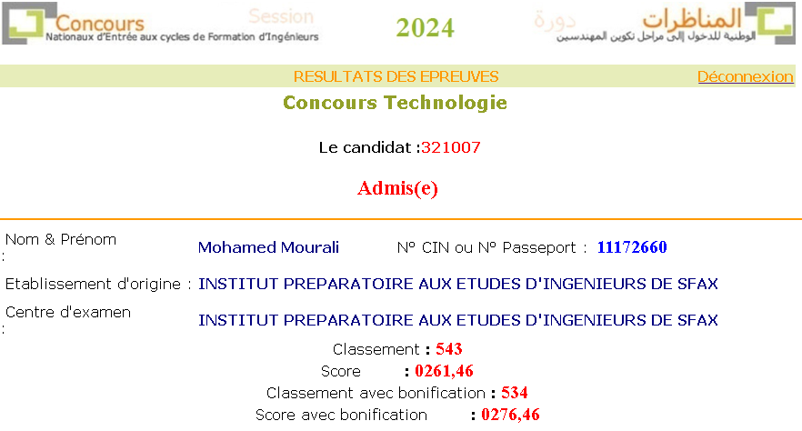

Mes Diplômes
- Baccalauréat Scientifique Section Technique - 2022
- 1ère année cycle péreparatoire Physique-Technique - 2022/2023
- 2éme année cycle péreparatoire Physique-Technique - 2023/2024
- Actuellement : 1ère année Génie Informatique
Diplômes et Études
- Baccalauréat Scientifique Section Technique - Mention assez bien (2022)
Lycée Abou kacem Chebi, Sfax , Tunisie.

- 1ère année cycle péreparatoire Physique-Technique - (2022/2023):
L'institut préparatoire aux études d'ingénieurs de Gafsa
- 2éme année cycle péreparatoire Physique-Technique - (2023/2024):
L'institut préparatoire aux études d'ingénieurs de Sfax
- Admis au concours national d'entrée aux écoles d'ingénieur - (2024)

- 1ère Année Génie Informatique - institut international de technologie , Sfax - (2024)